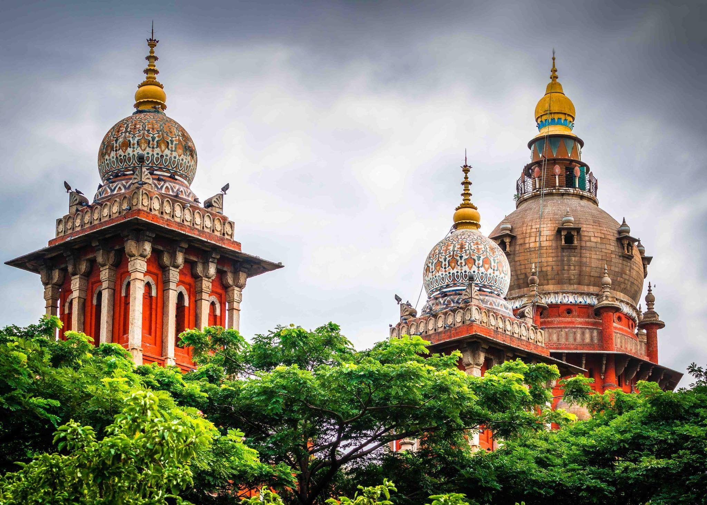
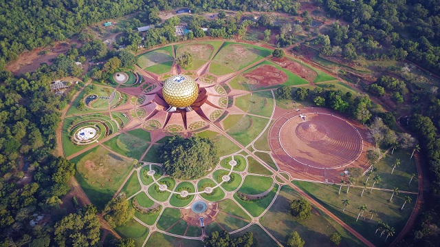
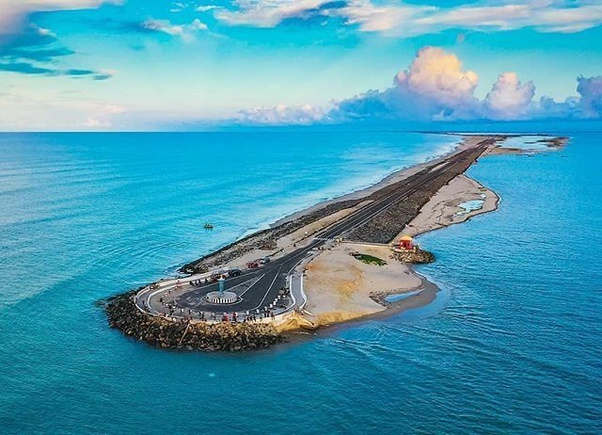

TAMIL NADU
Tamil Nadu has the largest tourism industry in India with a percentage share of 21.31% and 21.86% of domestic and foreign tourist visits in the country..
FAMOUS TOP 3 TOURIST PLACES TO VISIT IN TAMIL NADU
- CHENNAI

- PONDICHERRY

- DHANUSHKODI

FAMOUS FOOD IN TAMIL NADU
- Idli: The most famous dish in Tamilnadu, as well as the whole southern region is Idli.
- Sambar Best to enjoy with almost every main course, Sambar is a kind of South Indian dal (pulse).
- Chicken Chettinad For all non-veg lovers, one of the ideal dishes in Tamilnadu is Chicken Chettinad.